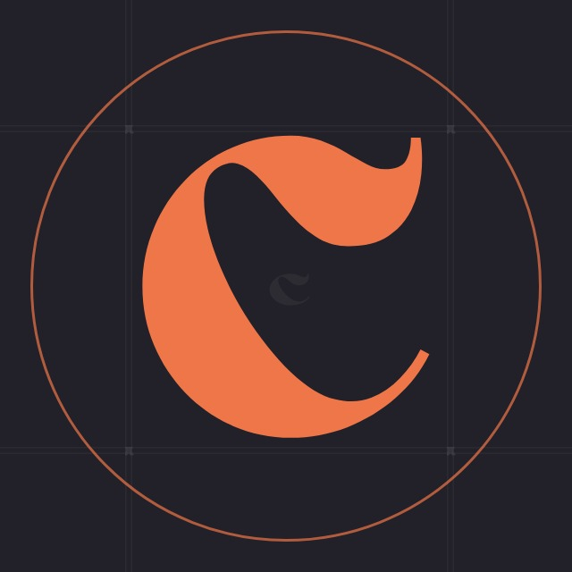
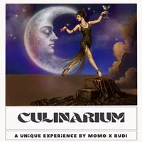
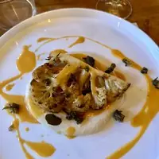
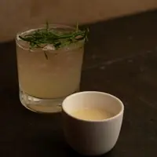
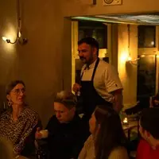
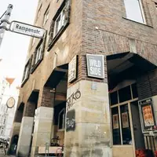

culinarium_hannover
culinarium_hannover
00Instagram
Euer Feed bleibt, wie er ist. Darauf bauen die nächsten 60 Beiträge auf, so wie ihr sie nach und nach postet: der Abend im November mit Ankündigung, «Noch drei Plätze» und Danke, der Abend im Dezember, Dirty Chicken und die Abende 2027. Dazwischen Rudis Teller, Momos Gläser, die Leute und die Bar.
Kein Foto, das schon auf eurem Profil steht, kommt nochmal vor; nur eure Plakate zeigen wir gezielt wieder, «Aus dem Archiv». Mit dem Schalter seht ihr euren Feed heute und mit den nächsten 60; die Nummern zeigen die Reihenfolge zum Posten.


Abende
Teller
Drinks
Tafel
Linden